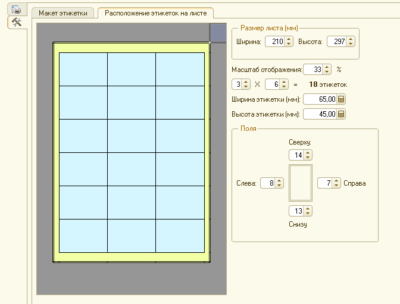
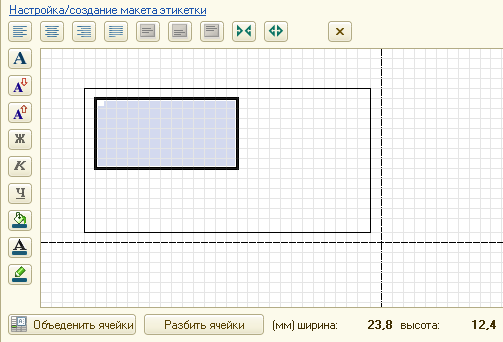
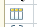

Для вывода на печать этикеток нужно заполнить табличную часть товаром, на который требуется распечатать этикетки. В поле количество указать количество экземпляров этикеток для конкретной позиции товара. Затем открыть интересующий шаблон и нафать кнопку "вывести на печать".
Для создания нового шаблона этикетки первое, что нужно сделать - это определиться с форматом листа и самой этикетки. Для настройки формата (размеров) этикетки переходим на закладку настроек (Настройки формата и содержания этикеток), далее на закладку Расположение этикеток на листе. 
На этой закладке устанавливаем все интересующие нас параметры. ВНИМАНИЕ! Если печать этикеток будет производится на бумаге, которая уже порезана на этикетки (например Buromax, Raflatac и пр.), после установки параметров размеров листа, полей, этикетки, необходимо произвести пробную печать на обычном листе бумаги для того, что бы убедиться, что все параметры листа установленны корректно, и сравнить на просвет полученную копию с рзметкой на листе самоклейки. Если отпечатанные этикетки смещаются относительно самоклеящихся этикеток, то подправить размеры полей (обычно нижнего и правого) в параметрах. В дальнейшем это будет сделать невозможно без полной очистки самого макета.
После того, как параметры листа выставленны корректно, можно приступать к созданию самого шаблона этикетки (наполнения содержанием). Для наполнения содержанием на макете этикетки нужно с помощью мышки выделить область, в которой будут отображаться те или иные данные, затем нажать кнопку "Объеденить ячейки".  После этого найти интересующий реквизит в левой колонке (в дереве доступных реквизитов) и просто с помощью левой кнопки мыши перетащить этот реквизит на созданную Вами область в макете. В нижней части окна Вы сразу увидите результат, который будет при печати этикеток. Если Вы желаете ДОБАВИТЬ какой-нибудь параметр к уже существующему (НАПРИМЕР: к наименованию товара добавить характеристику), то выполните перетаскивание с помощью правой кнопки мыши и в возникшем контекстном меню после отпускания кнопки выберите пункт "КОПИРОВАТЬ". Расположение текста относительно ячейки можно изменять с помощью кнопок управления, которые находятся слева и сверху поля редактирования макета (выравнивание по верхнему/нижнему краю, выравнивание по левому/правому краю, по ширине, так же можно с помощью кнопок увеличения/уменьшения размера шрифта изменять шрифт и т.п). После каждого выполненного Вами действия Вы сразу видите результат на примере этикетки в нижней части экрана. Что бы внести некий постоянный текст, нужно на объедененной области просто сделать двойной клик мышкой и набрать нужный Вам текст с клавиатуры. В нижней части сакета есть "линейка". С ее помощью Вы увидете реальный размер выделенной области в миллиметрах (высота и ширина).
После того, как компановка реквизитов завершена, можно сохранить созданный Вами макет для дальнейшего использования. Для этого в поле "Название шаблона этикетки" введите любое имя шаблона и нажмите кнопку "Сохранить макет". Позже Вы в любой момент сможете вернуться к этому макету для дальнейшего его редактирования, либо печати этикеток. Так же вы имеете возможность на любом этапе создания макета нажать "Вывести на печать", что бы увидеть промежуточный результат на всю выбранную Вами номенклатуру.
СОВЕТ: Если этикетка, которую Вы создаете невелика по размерам, то для удобства можно увеличить масштаб отображения макета. Для этого достаточно кликнуть на любой части макета и совместно с нажатой клавишей "Ctrl" прокрутить колесо мыши вверх до нужного масштаба. (Ctrl + колесо вниз -- уменьшение масштаба отображения) То же самое можно применить, если размер этикетки большой (например лишь 1 или 2 этикетки на листе), в этом случае для комфортного воспиятия нужно уменьшить отображаемый масштаб.
Так же есть две управляющие кнопки размером (увеличение/уменьшение) одной ячейки этикетки. Чем меньше масштаб, тем больше деталей можно будет внести на этикетку и чем болше размер самой этикетки, тем больше нужно установить размер ячейки. ВНИМАНИЕ! Размер одной ячейки этикетки можно изменять только до начала наполнения этикетки содержанием. При изменении размера ячейки происходит полная очистка макета!
Используйте кнопку "Подобрать товар" для произвольного наполнения табличной части товаром. В открывшимся окне Вы можете выбрать доступные фильтры или указать выборку согласно остатков на складе. Количество печатаемых экземпляров этикетки Вы можете либо задать фиксированным числом, либо указать количество печати (с помощью соответствующего флажка), равным количеству остатка на складе.
Кроме того, что Вы видите в дереве доступных для печати реквизитов, можно самостоятельно открыть дополнительные уровни. Такая возможность есть на любом реквизите ссылочного типа.  Например: Вам нужно вывести на этикетку код производителя. В товаре у Вас есть ссылка на справочник "Производители", код которого Вам нужно вывести на печать. Для открытия нижних уровней достаточно сдеать двойной клик по "Производителю" из товара, после чего Вы получите возможность пользования всеми реквизитами производителя. По уровням вложенности справочников эта возможность ничем не ограничена.